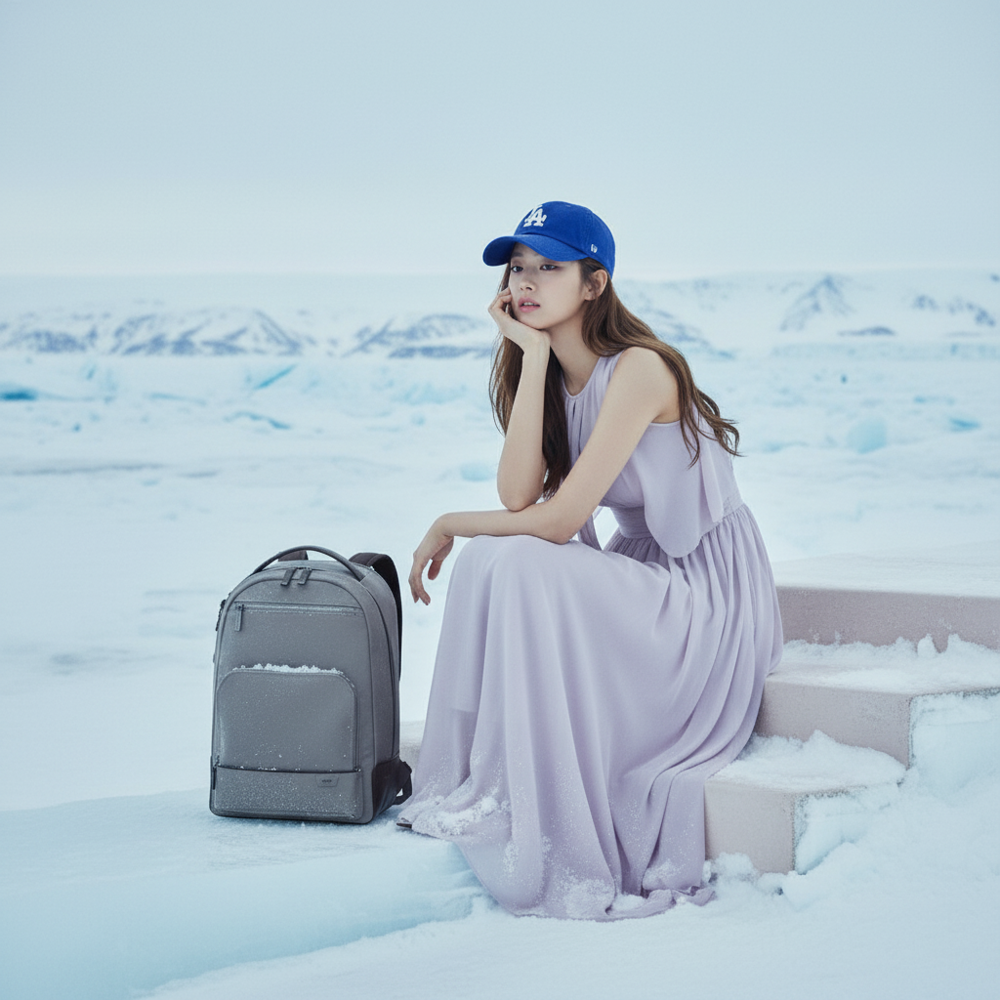

Snow Gray 컬러
은은한 실버 그레이 톤으로 겨울 룩과 출근 룩에 차분하게 녹아듭니다.

Designed for Quiet Movement
Snow Gray Backpack은 여행지에서는 짐을 단정하게 정리하고, 일상에서는 노트북과 필수품을 자연스럽게 담는 데일리 트래블 백팩입니다. 차분한 그레이 톤은 겨울 아우터, 니트, 원피스와 모두 잘 어울립니다.
Highlights
은은한 실버 그레이 톤으로 겨울 룩과 출근 룩에 차분하게 녹아듭니다.
13-15인치 노트북과 태블릿, 충전기까지 안정적으로 나누어 담을 수 있습니다.
눈과 가벼운 비가 오는 날에도 부담 없이 드는 데일리 소재를 적용했습니다.
짧은 여행과 긴 이동에서도 어깨 부담을 줄이는 폭신한 착용감을 제공합니다.
Snow Gray / One Size
전면 포켓에는 자주 꺼내는 소지품을, 메인 공간에는 노트북과 하루의 짐을 안정적으로 보관하세요. 미니멀한 실루엣 덕분에 코트, 패딩, 셔츠 스타일링과도 자연스럽습니다.
Color Direction
Reviews
겨울 코트에도 잘 어울려요. 색이 튀지 않는데 묘하게 고급스럽습니다.
여행용으로 샀는데 노트북까지 들어가서 평일에도 계속 메고 있어요.
전면 포켓이 편하고 가방 자체가 가벼워서 오래 걸어도 부담이 적어요.